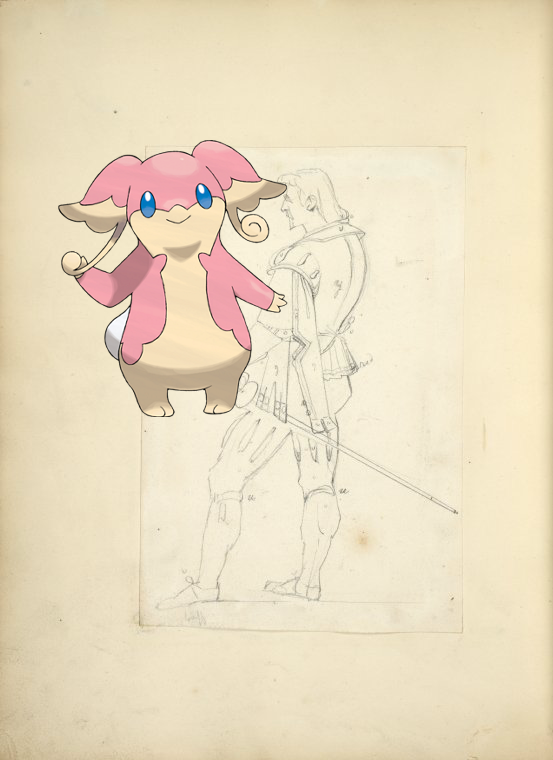
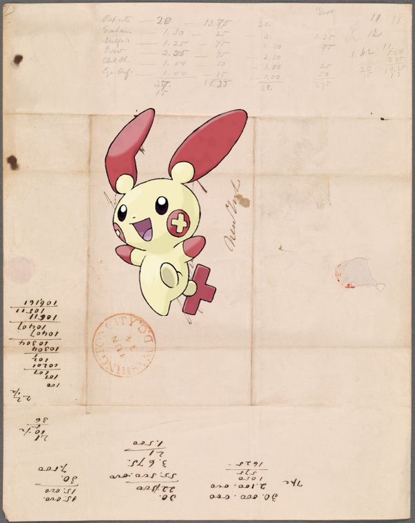
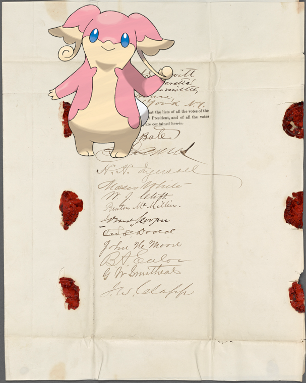
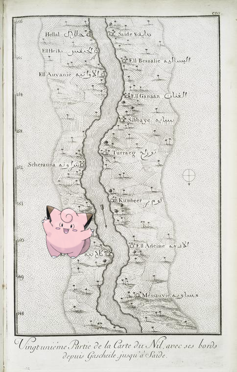
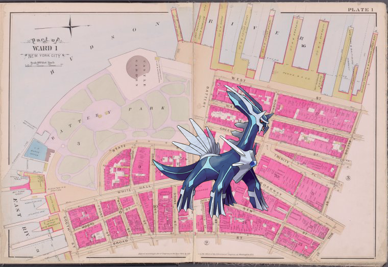
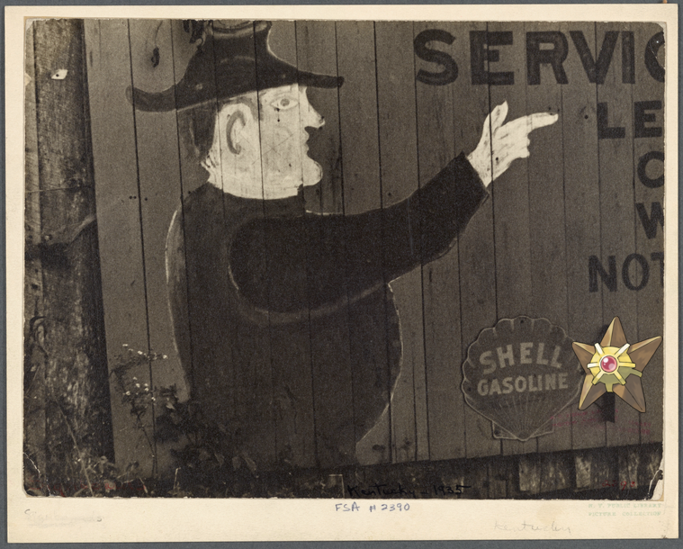

Pokémon in the NYPL archives
2018-5-30 02:10:04

Audino |
Man wearing breeches, doublet and sword.
.
2018-5-30 00:10:05
Scizor ;
The Ambassador
2018-5-29 22:10:05

Plusle on
Kern, J.
.
2018-5-29 20:10:07

Audino @
Tennessee
2018-5-29 18:10:14

Clefairy –
Vingtunième partie de la carte du Nil, avec ses bords, depuis Gascheile, jusqu'à Saide.
!
2018-5-29 16:10:06

Dialga –
Plate 1 [Map bounded by Hudson River, Rector St., Wall St., Broad St., East River 2]
2018-5-29 14:10:10

Staryu |
Middlesboro, Kentucky. A billboard advertisement for a gasoline service station
!
2018-5-29 12:10:04
Oddish |
Belcombe, Mrs. Henry ALS in the third person to 1838 Feb. 8
2018-5-29 10:10:03
on
Denmark, 1837-64.
!
29
|
28
|
27
|
26
|
25
|
24
|
23
|
22
|
21
|
20
|
19
|
18
|
17
|
16
|
15
|
14
|
13
|
12
|
11
|
10
|
9
|
8
|
7
|
6
|
5
|
4
|
3
|
2
|
1
|
0
 Scizor ; The Ambassador
Scizor ; The Ambassador